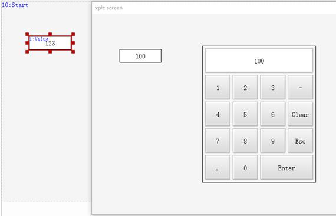
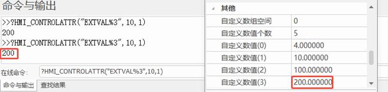
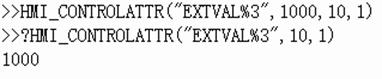

|
类型 |
元件操作指令 | |||||||||||||||||||||||||||||||||||||||||||||||||||||||||||||||||||||
|
描述 |
获取/设置元件的指定数值属性值 注：操作前需确保操作的元件具有该属性。 | |||||||||||||||||||||||||||||||||||||||||||||||||||||||||||||||||||||
|
语法 |
value=HMI_CONTROLATTR(strProperty[ , winid, controlid ]) HMI_CONTROLATTR( strProperty, value[ , winid, controlid ]) srtProperty:指定操作的元件属性
注：多状态属性，可在元件属性后面追加%n访问不同状态的属性，例如"BACK%0"表示状态0的背景颜色。
value：属性值 winid：HMI文件里面窗口编号，缺省为当前窗口 controlid：元件编号，缺省为当前自定义元件 | |||||||||||||||||||||||||||||||||||||||||||||||||||||||||||||||||||||
|
适用控制器 |
支持RTHmi | |||||||||||||||||||||||||||||||||||||||||||||||||||||||||||||||||||||
|
例子 |
例一： HMI_CONTROLATTR ("FORE",RGB(255,0,0),10,1) '设置窗口10元件1的前景颜色为红色 HMI_CONTROLATTR ("BACK",RGB(255,255,255),10,1) '设置窗口10元件1的背景颜色为白色 Ø 设置前的样式：
Ø 设置后的样式：
例二： VRSTRING(0,8) = "123456" HMI_CONTROLATTR("PWD",123456,10,5) '设置窗口10元件5的字符为密码显示
例三： HMI_CONTROLATTR("MIN",10,10,6) '设置值显示元件的最小值 HMI_CONTROLATTR("MAX",100,10,6) '设置值显示元件的最大值 注：最小值数值必须比最大值小才有效，大于等于均无效。同时应考虑“属性”栏中的最小值和最大值的传入值。 
例四： ?HMI_CONTROLATTR("EXTVAL%3",10,1) '读取扩展控件的自定义数值（3）的数据  HMI_CONTROLATTR("EXTVAL%3",1000,10,1) '设置扩展控件的自定义数值（3）的数据为1000 ?HMI_CONTROLATTR("EXTVAL%3",10,1) '再次读取扩展控件的自定义数值（3）的数据 
|